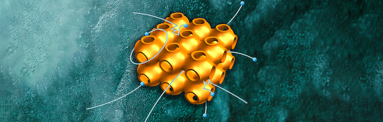

Wednesday, 6 April 2022, 14:30–17:00, room 5173.0050 (Linnaeusborg)
Prof. Giuseppe de Nittis (PUC, Santiago, Chile) and Prof. Max Lein (AIMR, Sendai, Japan) will give a pedagogical overview to the physics of topological phenomena, targeting both physicists and mathematicians.
The event will be streamed in a hybrid form in cooperation with the Basic Notions seminar.
After the symposium, all interested participants can join us for a drink at the food court.